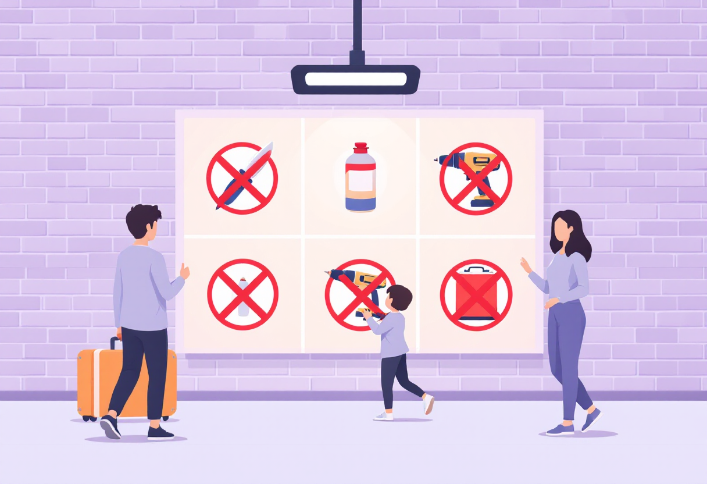
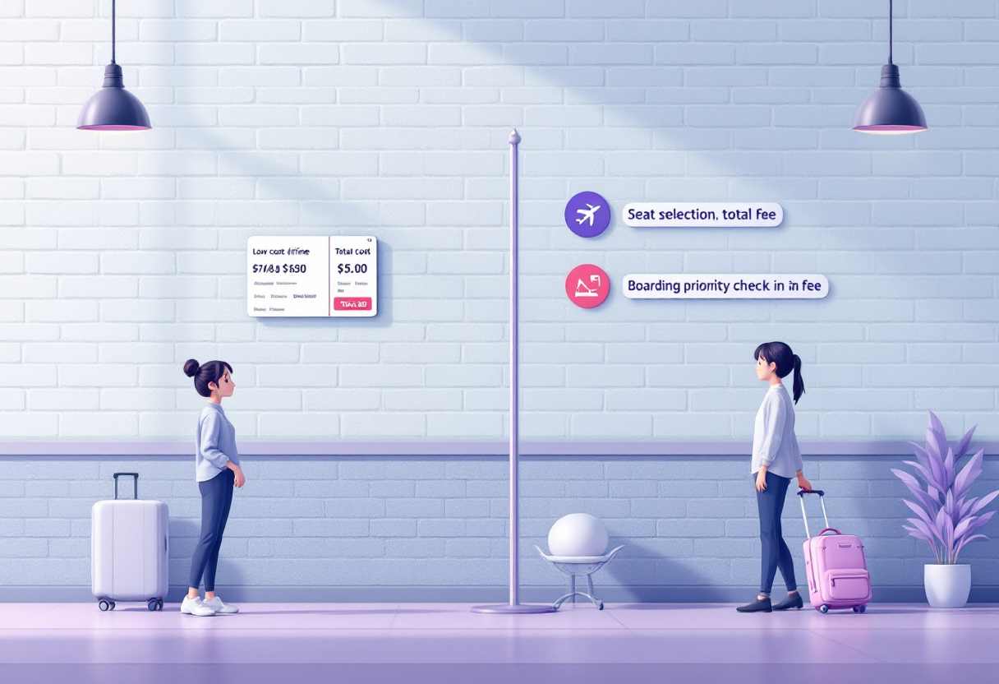
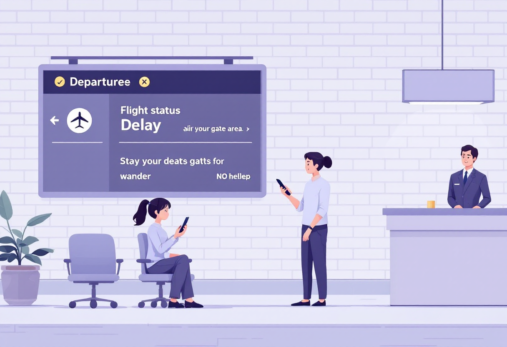
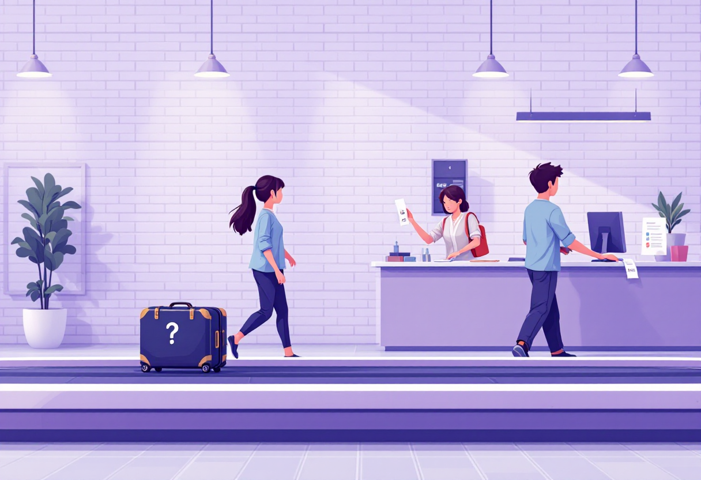

Перший раз в аеропорту

Перед поїздкою
Більшість міжнародних рейсів для українців зараз здійснюється з аеропортів сусідніх країн. Тому плануй не лише переліт, а й дорогу до аеропорту.
Заздалегідь перевір:
- з якого міста та аеропорту виліт;
- як добратися до аеропорту;
- чи потрібна ночівля перед рейсом;
- скільки часу займе проходження кордону.
Закладай запас часу на затримки транспорту та черги на кордоні.

Що взяти з собою
Перед виїздом перевір:
- паспорт або документ для подорожі;
- квиток чи посадковий талон;
- банківську картку;
- зарядний пристрій;
- павербанк;
- необхідні ліки.
Документи краще тримати в окремій кишені або папці, щоб не шукати їх перед контролем.

Коли приїжджати
Загальне правило:
- міжнародний рейс – за 2–3 години до вильоту;
- внутрішній рейс – за 1,5–2 години.
У великих аеропортах черги можуть бути довшими, особливо в сезон відпусток.

Що робити в аеропорту
Типовий маршрут виглядає так:
- Знайти свій рейс на табло.
- Здати багаж (якщо він є).
- Пройти контроль безпеки.
- Пройти паспортний контроль (для міжнародних рейсів).
- Знайти свій гейт.
- Дочекатися посадки.
Не бійся запитувати працівників аеропорту – для них це звичайна ситуація.

Що не можна брати в ручну поклажу
Найчастіше проблеми виникають через:
- ножі та гострі предмети;
- великі ємності з рідинами;
- газові балончики;
- інструменти;
- окремі види акумуляторів.
Перед польотом завжди перевіряй правила своєї авіакомпанії.

Якщо летиш лоукостером
Зверни увагу на:
- допустимі розміри ручної поклажі;
- необхідність онлайн-реєстрації;
- платний вибір місця;
- платний багаж.
Іноді найдешевший квиток після доплат стає значно дорожчим.

Якщо рейс затримали
- Перевір повідомлення від авіакомпанії.
- Стеж за інформацією на табло.
- Не залишай зону посадки без потреби.
- Звертайся до представників авіакомпанії, якщо затримка значна.

Якщо загубився багаж
Не виходь з аеропорту одразу.
Потрібно:
- звернутися до служби розшуку багажу;
- показати багажну бирку;
- залишити свої контакти;
- отримати номер звернення.